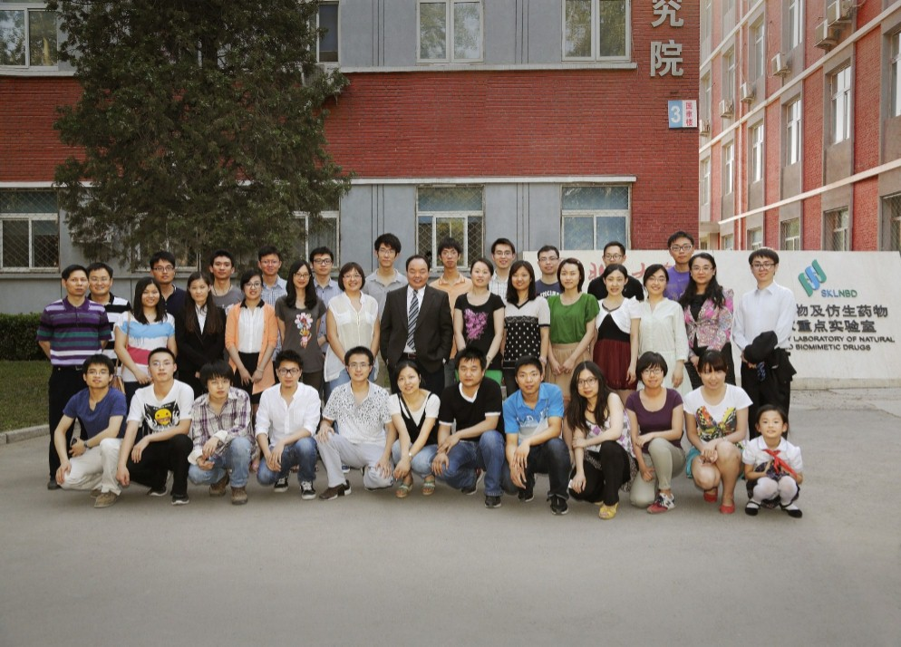

Ø 招聘条件：
1. 已毕业或即将毕业的博士或在站博士后，35周岁以下。
2. 具有病毒学、分子生物学、生物化学、有机化学或药物化学等相关专业背景，具有较强的科研创新及英文科研论文的写作能力。
3. 具有良好的人际关系和团队协作精神，能吃苦耐劳，工作踏实认真。
Ø 基本待遇：
1. 年薪：年薪工资不低于20万（博雅博士后年薪24万），并根据工作状态和进展提高年薪；
2. 住房：博士后进站时可以选择租住或不租公寓，现有公寓按照自愿申请、先到先得的原则分配。每月发放租房补贴3500元，租住公寓的扣除房租；
3. 鼓励并支持以项目负责人身份申请国家自然科学基金青年基金及博士后基金；
4. 博士后工作业绩突出者，可优先留校工作，提供预聘职位（Tenure Track）；
5. 其他待遇按照学校博士后的规章制度执行。
Ø 应聘程序：
1. 有意者请将个人简历、表明申请人科研能力和学术水平的成果证明（获奖、科研经历及发表的学术论文、工作设想）及两名本学科领域专家推荐信（其中一位应是申请人的博士导师）发送至肖老师：slxiao@bjmu.edu.cn，并注明“×××-应聘博士后”
2. 通过初审者，将另行通知面试的时间和地点。
附：
博士待遇及入校手续请参考学校博士后招聘启事
http://rsc.bjmu.edu.cn/zpxx/186000.htm
合作导师相关信息请参考课题组网页：